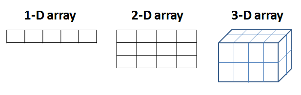
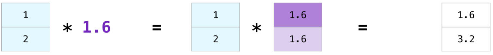

#Run the "Hello World" in the cell below to print "Hello World".
test = "Hello World"TL;DR
In this notebook, you will use NumPy to create 2-D arrays and easily compute mathematical operations. NumPy (Numerical Python) is an open-source package that is widely used in science and engineering. This posts summarized the lecture “Linear Algebra for Machine Learning and Data Science” from Coursera.
About Jupyter Notebooks
Jupyter Notebooks are interactive coding journals that integrate live code, explanatory text, equations, visualizations and other multimedia resources, all in a single document. As a first exercise, run the test snippet below and the print statement cell for “Hello World”.
print (test)Hello WorldBasics of NumPy
NumPy is the main package for scientific computing in Python. It performs a wide variety of advanced mathematical operations with high efficiency. In this practice lab you will learn several key NumPy functions that will help you in future assignments, such as creating arrays, slicing, indexing, reshaping, and stacking.
Packages
Before you get started, you have to import NumPy to load its functions. As you may notice, even though there is no expected output, when you run this cell, the Jupyter Notebook will have imported the package (often referred to as the library) and its functions. Try it for yourself and run the following cell.
import numpy as np
print("NumPy version: {}".format(np.__version__))NumPy version: 1.21.5Advantages of using NumPy arrays
Arrays are one of the core data structures of the NumPy library, essential for organizing your data. You can think of them as a grid of values, all of the same type. If you have used Python lists before, you may remember that they are convenient, as you can store different data types. However, Python lists are limited in functions and take up more space and time than NumPy arrays.
NumPy provides an array object that is much faster and more compact than Python lists. Through its extensive API integration, the library offers many built-in functions that make computing much easier in only a few lines of code. This can be a huge advantage when performing math operations on large data.
The array object in NumPy is called ndarray meaning ‘n-dimensional array’. To begin with, you will use one of the most common array types: the one-dimensional array (‘1-D’). A 1-D array represents a standard list of values entirely in one dimension. Remember that in NumPy, all of the elements within the array are of the same type.
one_dimensional_arr = np.array([10, 12])
print(one_dimensional_arr)[10 12]## How to create NumPy arrays ##
There are several ways to create an array in NumPy. You can create a 1-D array by simply using the function array() which takes in a list of values as an argument, and returns a 1-D array.
# Create and print a numpy array 'a' containing the elements 1, 2, 3.
a = np.array([1, 2, 3])
print(a)[1 2 3]Another way to implement an array is using numpy.arange(). This function will return an array of evenly spaced values within a given interval. To learn more about the arguments that this function takes, there is a powerful Jupyter Notebooks feature that allows you to access any function’s documentation by simply pressing shift+tab on your keyboard when clicking on the function. Give it a try for the built-in documentation of arange().
# Create an array with 3 elements, starting from default number 0.
b = np.arange(3)
print(b)[0 1 2]# Create an array that starts from integer 1, ends at 20, incremented by 3.
c = np.arange(1, 20, 3)
print(c)[ 1 4 7 10 13 16 19]What if you wanted to create an array with five evenly spaced values in the interval from 0 to 100? As you may notice, here you have 3 parameters that the array should take. The start is the number 0, the end is number 100, and 5 is the number of the elements. NumPy has a function that allows you to do specifically this by using numpy.linspace().
lin_spaced_arr = np.linspace(0, 100, 5)
print(lin_spaced_arr)[ 0. 25. 50. 75. 100.]Did you notice that the output of the function is presented in the float value form (e.g. “0. 25.”)? The reason is that the default type for values in the numpy function is a floating point (np.float64). You can easily specify your data type using dtype. If you accessed the built-in documentation of the functions, you may have noticed that most functions take in an optional parameter dtype. In addition to float, Numpy has several other data types such as ‘int’, and ‘char’.
To change the type to integers, you need to set the dtype to int. You can do so, even with the previous functions. Feel free to try it out and modify the cells to output your prefered data type.
lin_spaced_arr_int = np.linspace(0, 100, 5, dtype=int)
print(lin_spaced_arr_int)[ 0 25 50 75 100]c_int = np.arange(1, 20, 3, dtype=int)
print(c_int)[ 1 4 7 10 13 16 19]b_float = np.arange(3, dtype=float)
print(b_float)[0. 1. 2.]char_arr = np.array(['Welcome to Math for ML!'])
print(char_arr)
print(char_arr.dtype) # Prints the data type of the array['Welcome to Math for ML!']
<U23Did you notice that the output of the data type of the char_arr array is <U23? This means that the string ('Welcome to Math for ML!') is less than a 23-character (23) unicode string (U) on a little-endian architecture. You can learn more about data types here.
More NumPy Arrays
One of the advantages of using NumPy is that you can easily create arrays with built-in functions such as: - numpy.ones() - Returns a new array setting values to one. - numpy.zeros() - Returns a new array setting values to zero. - numpy.empty() - Returns a new uninitialized array. - numpy.random.rand() - Returns a new array with values chosen at random.
# Return a new array with 3 elements of 1.
ones_arr = np.ones(3)
print(ones_arr)[1. 1. 1.]# Return a new array with 3 elements of 0.
zeros_arr = np.zeros(3)
print(zeros_arr)[0. 0. 0.]# Return a new array with 3 elements without initializing entries.
empt_arr = np.empty(3)
print(empt_arr)[0. 0. 0.]# Return a new array with 3 elements between 0 and 1 chosen at random.
rand_arr = np.random.rand(3)
print(rand_arr)[0.00219529 0.50090917 0.95975525]Note: The difference between
numpy.zerosandnumpy.emptyis thatnumpy.emptycreates an array with uninitialized elements from available memory space, andnumpy.zeroscreates 0-initialized array. And maybenumpy.emptyis faster to execute.
Multidimensional Arrays
With NumPy you can also create arrays with more than one dimension. In the above examples, you encountered 1-D arrays, where you can access their elements using a single index. A multidimensional array has more than one column. Think of a multidimensional array as an excel sheet where each row/column represents a dimension.

# Create a 2 dimensional array (2-D)
two_dim_arr = np.array([[1,2,3], [4,5,6]])
print(two_dim_arr)[[1 2 3]
[4 5 6]]An alternative way to create a multidimensional array is by reshaping the initial 1-D array. Using numpy.reshape() you can rearrange elements of the previous array into a new shape.
# 1-D array
one_dim_arr = np.array([1, 2, 3, 4, 5, 6])
# Multi-dimensional array using reshape()
multi_dim_arr = np.reshape(
one_dim_arr, # the array to be reshaped
(2,3) # dimensions of the new array
)
# Print the new 2-D array with two rows and three columns
print(multi_dim_arr)[[1 2 3]
[4 5 6]]Finding size, shape, dimension.
In the future assignments, you will need to know how to find the size, dimension and shape of an array. Using the NumPy built-in functions you can easily identify the followings: - ndarray.ndim() - Returns the number of array dimensions. - ndarray.shape() - Returns the shape of the array. Each number in the tuple denotes the lengths of each corresponding dimension. - ndarray.size() - Counts the number of elements along a given axis. Returns the size of the array.
# Dimension of the 2-D array multi_dim_arr
multi_dim_arr.ndim2# Shape of the 2-D array multi_dim_arr
# Returns shape of 2 rows and 3 columns
multi_dim_arr.shape(2, 3)# Size of the array multi_dim_arr
# Returns total number of elements
multi_dim_arr.size6Array Math Operations
In this section, you will see that NumPy allows you to quickly perform elementwise addition, substraction, multiplication and division for both 1-D and multidimensional arrays, also known as matrices. The operations are done using the math symbol for each ‘+’, ‘-’, ’*’. Recall that addition of python lists works completely differently as it would add (append) two lists together, thus making a longer list, while subtraction and multiplication of python lists do not work.
arr_1 = np.array([2, 4, 6])
arr_2 = np.array([1, 3, 5])
# Adding two 1-D arrays
addition = arr_1 + arr_2
print(addition)
# Subtracting two 1-D arrays
subtraction = arr_1 - arr_2
print(subtraction)
# Multiplying two 1-D arrays element by element
multiplication = arr_1 * arr_2
print(multiplication)[ 3 7 11]
[1 1 1]
[ 2 12 30]Multiplying vector with a scalar (broadcasting)
Suppose you wanted to convert miles to kilometers using the NumPy array functions that you’ve learned so far. You can do this by carrying out an operation between an array (miles) and a single number (the conversion rate which is a scalar). Since, 1 mile = 1.6 km, NumPy computes each multiplication within each cell.
This concept is called broadcasting, which allows you to perform operations specifically on arrays of different shapes.
vector = np.array([1, 2])
vector * 1.6array([1.6, 3.2])
Indexing and Slicing
Indexing is very useful as it allows you to select specific elements from an array. It also lets you select entire rows/columns or planes as you’ll see in future assignments for multi-dimensional arrays.
Indexing
Let us select specific elements from the arrays as given.
# Select the third element of the array. Remember the counting starts from 0.
a = ([1, 2, 3, 4, 5])
print(a[2])
# Select the first element of the array.
print(a[0])3
1For multi-dimensional arrays, to index a specific element, think of two indices - i selects the row, and j selects the column.
# Indexing on a 2-D array
two_dim = np.array(([1, 2, 3],
[4, 5, 6],
[7, 8, 9]))
# Select element number 8 from the 2-D array using indices i, j.
print(two_dim[2][1])8Slicing
Slicing gives you a sublist of elements that you specify from the array. The slice notation specifies a start and end value, and copies the list from start up to but not including the end (end-exlusive).
# Slice the array a to give the output [2,3,4]
sliced_arr = a[1:4]
print(sliced_arr)[2, 3, 4]# Slice the two_dim array to output the first two rows
sliced_arr_1 = two_dim[0:2]
sliced_arr_1array([[1, 2, 3],
[4, 5, 6]])# Similarily, slice the multi-dimensional array two_dim to output the last two rows
sliced_two_dim_rows = two_dim[1:4]
print(sliced_two_dim_rows)[[4 5 6]
[7 8 9]]sliced_two_dim_cols = two_dim[:,1]
print(sliced_two_dim_cols)[2 5 8]Stacking
Finally, stacking is a feature of NumPy that leads to increased customization of arrays. It basically means to join two or more arrays, either horizontally or vertically, meaning that it is done along a new axis.
vstack- stacks verticallyhstack- stacks horizontallyhsplit- splits an array into several smaller arrays
a1 = np.array([[1,1],
[2,2]])
a2 = np.array([[3,3],
[4,4]])
print(a1)
print(a2)[[1 1]
[2 2]]
[[3 3]
[4 4]]# Stack arrays vertically
vert_stack = np.vstack((a1, a2))
print(vert_stack)[[1 1]
[2 2]
[3 3]
[4 4]]# Stack arrays horizontally
horz_stack = np.hstack((a1, a2))
print(horz_stack)[[1 1 3 3]
[2 2 4 4]]